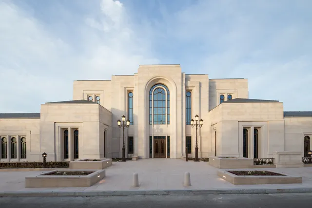

Temple Album
Home
Old
New
Large
Small
Temples
Abidjan Ivory Coast Temple
Alabang Philippines Temple
Accra Ghana Temple
Belo Horizonte Brazil Temple
Benin City Nigeria Temple
Brazzaville Republic of the Congo Temple
Kyiv Ukraine Temple
Mexico City Mexico Temple

Paris France Temple